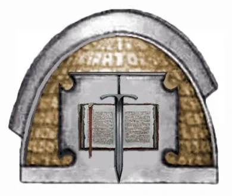
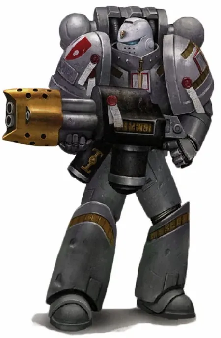
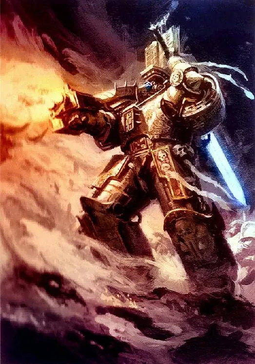
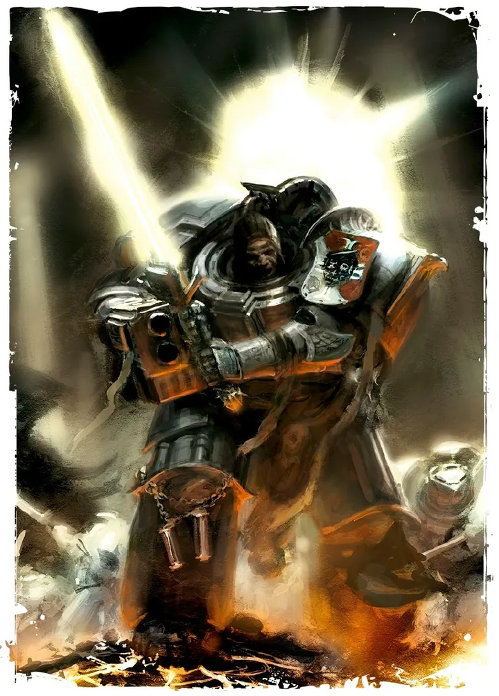
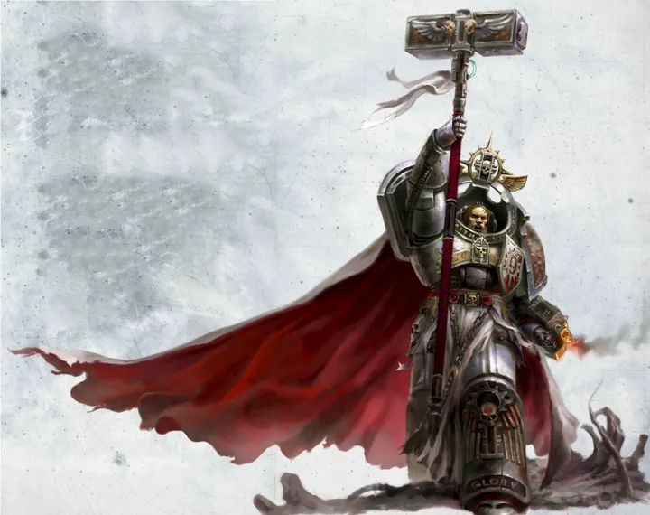
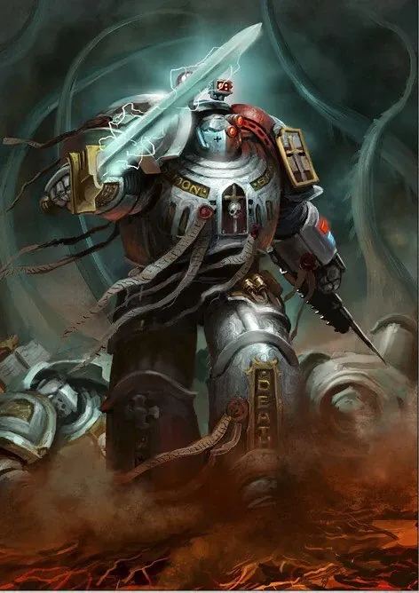
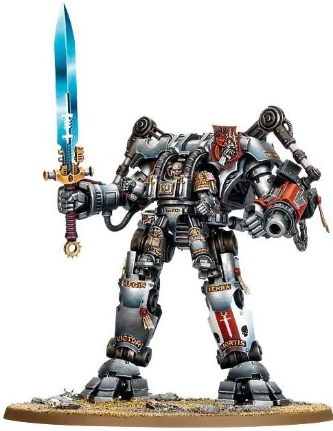
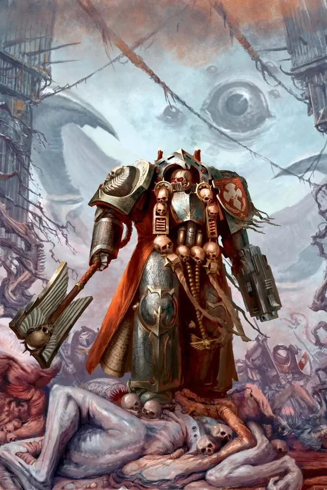

01ภาพรวม
Chapter ลับที่ทุกนายเป็นนักพลังจิต ถูกสร้างขึ้นเพื่อต่อสู้กับปีศาจแห่ง Chaos โดยเฉพาะ
02ต้นกำเนิด
ระหว่าง Horus Heresy Malcador the Sigillite ที่ปรึกษาของจักรพรรดิ คัดเลือก Space Marines 8 นายจาก Legion ต่าง ๆ (รวมทั้งจาก Legion ที่ทรยศ) มาเป็นผู้ก่อตั้ง เชื่อกันว่าพวกเขาใช้เจเนซีดที่อาจมาจากจักรพรรดิเอง ฐานของพวกเขาคือดวงจันทร์ Titan ที่ถูกซ่อนไว้ใน Warp จนถึงยุค Second Founding
03เนื้อเรื่องเจาะลึก
Chapter ที่เป็นความลับ
ก่อตั้งอย่างลับ ๆ โดย Malcador the Sigillite ตามคำสั่งของจักรพรรดิในช่วงปลาย Heresy ต้นกำเนิดของ Gene-seed ไม่แน่ชัด (เชื่อกันว่ามาจากจักรพรรดิเอง) ทหารชุดแรกมาจากนักรบที่ Malcador รวบรวมจากหลาย Legion
Titan — ดวงจันทร์ลับ
ฐานทัพอยู่บนดวงจันทร์ Titan ของดาวเสาร์ในระบบสุริยะ ไม่ปรากฏบนแผนที่ทางการ Grey Knights ทำหน้าที่เป็น "Chamber Militant" ของ Ordo Malleus — ผู้ล่าปีศาจของ Inquisition
04นิสัยและวัฒนธรรม
- ทุกนายเป็น Psyker และได้รับการฝึกให้ต้านทานการครอบงำของ Chaos
- จดจำ 'ชื่อจริง' ของปีศาจเพื่อใช้ขับไล่
- ทำงานเป็นความลับสูงสุด เป็นกองทหารของ Ordo Malleus
05จุดที่น่าสนใจ
- ไม่เคยมีใครใน Chapter ตกเป็นของ Chaos (ตามบันทึกทางการ)
- สวมเกราะสีเงิน Aegis
- Kaldor Draigo เดินหลงอยู่ใน Warp และสลักชื่อบนหัวใจของ Mortarion
06ความสามารถพิเศษ
สิ่งที่ทำให้ Grey Knights แตกต่างจากทัพอื่น — ทั้งพลังที่ติดตัวมาทั้งเผ่า/ทัพ และความสามารถของบุคคลสำคัญ
ของทั้งเผ่า/ทัพ

ทุกนายเป็นผู้ใช้พลังจิต
Grey Knights เป็น Chapter เดียวที่ทหารทุกนายเป็น Psyker ใช้พลังจิตร่วมกันเป็นหนึ่งเดียว สร้างโล่ Aegis เผาปีศาจด้วยเพลิงศักดิ์สิทธิ์ และทิ้งตัวผ่านการ "เทเลพอร์ต" ลงสนามรบ

อาวุธ Nemesis Force Weapon
ทุกคนถือดาบ ค้อน หรือหอกพลังจิตที่ทำร้ายปีศาจได้โดยตรง ชุดเกราะ Aegis ถูกสลักคำอวยพรต้านการครอบงำ

จิตใจที่ไม่มีวันแปดเปื้อน
ถูกคัดเลือกและทดสอบอย่างโหดร้ายที่สุด ไม่มี Grey Knight คนใดเคยตกเป็นของ Chaos (ตามบันทึกทางการ) ทำให้รู้ "ชื่อจริง" ของปีศาจที่ใช้ผนึกหรือเนรเทศมันได้

ความลับที่ต้องปกปิด
การมีอยู่ของปีศาจเป็นความลับของจักรวรรดิ พยานที่เห็น Grey Knights ต่อสู้กับปีศาจมักถูกลบความทรงจำหรือถูกกำจัดโดย Inquisition
ของบุคคลสำคัญ

Kaldor Draigo
หัวใจที่สลักชื่อปีศาจSupreme Grand Master ที่สลักชื่อจริงของปีศาจที่เขาเนรเทศไว้บนหัวใจของตัวเอง ติดอยู่ในอาณาจักรของ Chaos นานหลายศตวรรษ เดินทางผ่าน Warp และโผล่ออกมาในที่ต่าง ๆ

Castellan Garran Crowe
ผู้เฝ้าดาบต้องสาปถูกเลือกให้เฝ้า Black Blade of Antwyr ดาบที่มีปีศาจสิงและกระซิบล่อลวงเขาตลอดเวลา — ต้องใช้จิตใจที่แข็งแกร่งที่สุดใน Chapter
07หน่วยและบทบาทในกองทัพ
Grey Knights คือ Chapter ลับของ Ordo Malleus ทุกนายเป็นผู้ใช้พลังจิต (Psyker) ที่ถูกฝึกมาเพื่อฆ่าปีศาจ Chaos โดยเฉพาะ มีทหารราว 1,000 นายเหมือนกัน
Supreme Grand Master
สุพรีม แกรนด์ มาสเตอร์ผู้นำสูงสุดของ Grey Knights (ปัจจุบันคือ Kaldor Draigo ที่ติดอยู่ใน Warp ทำให้มีผู้นำรักษาการ) นำ 8 Brotherhood

Brother-Captain
บราเธอร์-กัปตันผู้นำของ Brotherhood หนึ่งกอง (เทียบกองร้อย) ต้องเป็นทั้งนักรบและผู้ใช้พลังจิตระดับสูง

Grand Master
แกรนด์มาสเตอร์ผู้นำ Brotherhood ระดับสูงสุด 8 คนที่ประกอบเป็นสภาของ Chapter แต่ละคนดูแลหน้าที่ต่างกัน
Purifiers
เพียวริฟายเออร์นักรบที่มีจิตใจบริสุทธิ์ที่สุด ไม่เคยถูก Chaos แปดเปื้อนเลย ใช้ไฟศักดิ์สิทธิ์ (Cleansing Flame) เผาปีศาจ
Paladins
พาลาดินทหารที่ผ่านบททดสอบ "Trials of the Paladin" เดินทางไปรับรู้วีรกรรมของ Grey Knights ทุกคนในประวัติศาสตร์ เป็นนักดาบที่เก่งที่สุด

Apothecary
อะโพเธคารีหมอของ Grey Knights ยังต้องคอยตรวจร่างกายและจิตใจพี่น้องว่าไม่ถูกปีศาจแปดเปื้อน

Techmarine
เทคมารีนดูแลชุดเกราะ Nemesis Dreadknight และอุปกรณ์ที่สลักคำอวยพรกันปีศาจ

Chaplain
แชปเลนคุมจิตวิญญาณของพี่น้องไม่ให้สั่นคลอนแม้เผชิญปีศาจที่รู้ความลับในใจ
ตำแหน่งมาตรฐานของ Space Marine (Captain, Apothecary, Techmarine ฯลฯ) ดูได้ที่ หน่วยและบทบาทของ Space Marines และกฎการจัดองค์กรที่ Codex Astartes
08วีรกรรมและเหตุการณ์สำคัญ
ก่อตั้ง
Malcador คัดเลือกผู้ก่อตั้ง 8 นาย
สงคราม Armageddon ครั้งที่ 1
ขับไล่ Angron กลับเข้า Warp
Arks of Omen
พยายามดักจับ Angron ด้วยพิธีกรรมใช้ชื่อจริง
09ตัวละครสำคัญ
Kaldor Draigo
Supreme Grand Masterต่อสู้อยู่ในมิติ Warp มาหลายร้อยปี
10ยุค 40K — สหัสวรรษที่ 41
ยุค 40K Grey Knights ออกปฏิบัติการทุกครั้งที่ปีศาจบุกขนาดใหญ่ และถูกเก็บเป็นความลับแม้จากทหารจักรวรรดิส่วนใหญ่
11เนื้อเรื่องล่าสุด (Era Indomitus / M42)
การเกิด Great Rift ปล่อยปีศาจออกมามากที่สุดในประวัติศาสตร์ Grey Knights ถูกส่งไปทั่วทั้ง Imperium Sanctus และ Nihilus
หลังการเกิด Great Rift ปฏิทินของจักรวรรดิคลาดเคลื่อน เหตุการณ์ยุคปัจจุบันจึงมักระบุเพียง 'M42' ไม่มีปีที่แน่นอน
12แกลเลอรี